BÁO CÁO LAB 01 — PHÂN LOẠI FASHIONMNIST BẰNG PYTORCH
Chủ đề: EDA, preprocessing, feature engineering, kiến trúc MLP và tối ưu hóa.
Phạm vi: SmallMLP, MainMLP, MainMLP_FE; SGD có momentum, RMSprop, Adam; tìm siêu tham số; lưu/tải và đánh giá lại toàn bộ test.
Quy ước bằng chứng: số liệu được đọc từ artifact của từng run. Kết quả kiến trúc cũ, K-fold và sweep chưa được xác minh cho pipeline hiện hành không được dùng để chứng minh kết luận. Nhật ký sửa phần mềm nằm trong internal_changes.md, ngoài báo cáo.
Bản nguồn để dàn trang: 29 đơn vị nội dung với ngắt trang gợi ý cho A4, có hình và bảng. Dự kiến font 12–13 pt, giãn dòng 1,3–1,5, lề 20–25 mm. Chưa xuất PDF; số trang cuối phải xác nhận khi render. Không dùng số dòng Markdown thay cho số trang.
Tóm tắt
Lab xây dựng pipeline phân loại 10 nhóm trang phục từ ảnh xám 28×28. Phần dữ liệu gồm khảo sát phân bố, kiểm tra tính toàn vẹn, chia train/validation có phân tầng, chuẩn hóa theo thống kê train và trích xuất 10 đặc trưng cường độ/hình học. Đặc trưng được nối với pixel chuẩn hóa để khảo sát biểu diễn lai mà không tăng mạnh kích thước đầu vào.
Ba cấu hình đạt test accuracy lần lượt 88,52%, 89,41% và 89,60%. Tăng dung lượng SmallMLP sang MainMLP cải thiện 0,89 điểm phần trăm; bổ sung 10 feature tăng thêm 0,19 điểm phần trăm trong cùng split và seed. Đây là mô tả của một lượt thực nghiệm, chưa đủ xác nhận ý nghĩa thống kê hoặc ưu thế phổ quát của feature engineering.
Nhánh optimizer tách riêng trên MainMLP. Tuning cải thiện SGD so với cấu hình cùng LR, nhưng RMSprop và Adam chưa vượt baseline tương ứng. Adam tốt nhất trong study được refit, lưu và tải lại; đánh giá trên 10.000 ảnh test tái tạo accuracy 89,14%. Kết quả nhấn mạnh việc phân biệt điều kiện so sánh, tiêu chí chọn model và bằng chứng inference.
Mục lục
- 1.1. Diễn giải đề bài và câu hỏi nghiên cứu
- 1.2. Bài toán, dữ liệu và hợp đồng tensor
- 1.3. Kiến trúc phần mềm và luồng dữ liệu
- 1.4. Bảy khái niệm PyTorch được vận dụng
- 1.5. Chia tập và tránh rò rỉ thông tin
- 2.1. EDA cấu trúc, tính toàn vẹn và ảnh mẫu
- 2.2. Phân bố lớp và ảnh trung bình
- 2.3. Phân bố pixel và chuẩn hóa cường độ
- 2.4. Không gian pixel và tương đồng giữa lớp
- 2.5. Thiết kế và công thức mười đặc trưng
- 2.6. Code extractor và kiểm chứng tại notebook
- 2.7. StandardScaler và phân bố feature
- 2.8. Hình học, tương quan và đóng gói dữ liệu
- 2.9. Ba MLP và số lượng tham số
- 2.10. Forward, cross-entropy và training loop
- 2.11. Sanity overfit, checkpoint và môi trường
- 2.12. Thiết kế so sánh optimizer và search
- 2.13. Metric đa lớp, ROC và Precision–Recall
- 3.1. So sánh tổng thể ba cấu hình
- 3.2. Đường học và lựa chọn epoch
- 3.3. Metric theo lớp và confusion matrix
- 3.4. ROC và Precision–Recall của ba model
- 3.5. Optimizer trong điều kiện cùng learning rate
- 3.6. Search, pruning và best trial
- 3.7. Loss/accuracy với best parameters của đủ ba optimizer
- 3.8. Refit, save/load và full-test sau tải
- 3.9. Kết luận, giới hạn và hướng phát triển
- 3.10. Kiến trúc hiển thị và tài nguyên mỗi mẫu training
- 3.11. Đo training với đúng một mẫu
1. ĐẶC TẢ, CƠ SỞ VÀ THIẾT KẾ
1.1. Diễn giải đề bài và câu hỏi nghiên cứu
Đề bài yêu cầu vận dụng các thành phần cốt lõi của PyTorch: tensor, dataset/loader, transforms, model, autograd, optimizer và saving/loading. Sản phẩm cần có source, quy trình thực nghiệm, đồ thị loss và minh họa dự đoán so với nhãn thật. Vì vậy, mục tiêu không chỉ là tạo checkpoint mà còn giải thích dữ liệu được biến đổi như thế nào và kết quả được đo ở đâu.
Thiết kế hiện hành trả lời ba câu hỏi. Một MLP nhỏ hơn có tiết kiệm tham số trong khi giữ hiệu năng hợp lý không? Mười đặc trưng có thể giải thích từ hình dáng/cường độ có hữu ích khi nối với 784 pixel không? Hiệu quả SGD, RMSprop, Adam thay đổi thế nào giữa cùng LR và tìm tham số riêng?
SmallMLP/MainMLP phục vụ so sánh dung lượng. MainMLP/MainMLP_FE khảo sát biểu diễn. Các thực nghiệm optimizer giữ MainMLP nhận pixel để tránh đồng thời thay đổi đầu vào và thuật toán cập nhật. Tách câu hỏi giúp diễn giải kết quả có cơ sở hơn, dù một seed chưa loại bỏ biến thiên khởi tạo.
Ngưỡng và benchmark từ các thiết kế lịch sử không tự chuyển thành tiêu chí đã chốt cho ba model mới. Báo cáo đánh giá tính đúng đắn của hợp đồng dữ liệu, khả năng chạy và tái sử dụng, metric tổng thể/theo lớp và các điều kiện so sánh. Nhiều seed, kiểm định thống kê và Kaggle end-to-end là giới hạn hoặc hướng mở rộng, không được trình bày như công việc đã hoàn thành.
1.2. Bài toán, dữ liệu và hợp đồng tensor
FashionMNIST được chọn vì ảnh nhỏ, nhãn rõ và có những nhóm trang phục gần nhau về hình dáng. Đây là bài toán phù hợp để khảo sát MLP cơ bản và ảnh hưởng biểu diễn trong phạm vi lab. Báo cáo sử dụng dữ liệu và run trong repository làm nguồn thực nghiệm; không lấy leaderboard hay kết quả của mạng khác làm kết quả của bài.
Ảnh thô là uint8 kích thước 28×28. Đầu vào modeling là float32; nhãn là số nguyên 0–9. Mỗi ảnh có đúng một nhãn nên đây là phân loại đa lớp đơn nhãn. Model trả 10 logits; lớp dự đoán là argmax. Softmax được dùng khi cần xác suất cho curve hoặc minh họa, không thêm vào đầu vào CrossEntropyLoss.
| Mã lớp | Tên lớp |
|---|---|
| 0 | T-shirt/top |
| 1 | Trouser |
| 2 | Pullover |
| 3 | Dress |
| 4 | Coat |
| 5 | Sandal |
| 6 | Shirt |
| 7 | Sneaker |
| 8 | Bag |
| 9 | Ankle boot |
Tập ban đầu gồm 60.000 ảnh train-pool và 10.000 ảnh test. Train-pool chia thành 54.000 train cập nhật gradient và 6.000 validation. Cần phân biệt train-pool 60.000 với train 54.000: phạm vi thống kê khác nhau không thể gọi chung là cùng một tập train khi đối chiếu số liệu.
Flatten biến ảnh thành 784 chiều, giữ pixel nhưng không áp cấu trúc kết nối cục bộ như convolution. Đây là đánh đổi của baseline: dễ phân tích và tính số tham số, nhưng chưa tận dụng cấu trúc không gian như CNN. Những kết luận về MLP trong báo cáo không đại diện giới hạn tốt nhất có thể đạt trên FashionMNIST.
1.3. Kiến trúc phần mềm và luồng dữ liệu
Project chia thành config, source tái sử dụng, notebook trình bày, CLI và artifact. workflow.json giữ cấu hình hiện hành và registry run. Source thực hiện tính toán; notebook điều phối, hiển thị và kiểm chứng. Artifact cho phép đọc lại kết quả khi chỉnh trình bày mà không huấn luyện lại.
Luồng chính: ảnh thô → chia tập → rescale → trích xuất/chuẩn hóa → prepared.npz → loader → MLP → loss/optimizer → best checkpoint theo validation → test → save/load. Pixel và feature có scaler riêng. Nhãn và original index đi cùng mẫu xuyên suốt luồng, tránh ghép feature với sai ảnh.
| Module | Vai trò | Sản phẩm |
|---|---|---|
| src/datasets/eda.py | EDA, thống kê, dữ liệu thô | eda/tables, eda/figures |
| src/datasets/base.py | Chia stratified và đọc indices | split_indices.npz, split_metadata.json |
| src/datasets/features.py | Công thức N×10 | features theo ảnh |
| src/datasets/preparation.py | Pipeline chuẩn bị đầy đủ | prepared.npz, scaler, CSV |
| src/models/mlp.py | FashionMLP linh hoạt | logits N×10 |
| src/training/trainer.py | Train/evaluate, optimizer, sanity | history, weight cập nhật |
| src/training/comparison.py | Ba cấu hình kiểm soát | best.pt, metric, predictions |
| src/training/tuning.py | Fixed/search/refit và curves | study, best configs, history |
| src/inference.py | Load/evaluate/save-load | test metric, roundtrip, samples |
| src/utils/comparison_plots.py | So sánh artifact thực | confusion, ROC/PR, cost |
| src/utils/runs.py | Nhận diện/môi trường/manifest | run config, environment, checksum |
Notebook 01 gọi prepare_data một lần để tạo backend tổng thể ở train mode, rồi trình bày/kiểm chứng từng giai đoạn. Roadmap ánh xạ phương pháp sang code/output, không khẳng định mỗi cell tạo một tập dữ liệu độc lập. View mode chọn run đã đăng ký; cell kiểm chứng có thể lưu bằng chứng riêng nhưng không train model.
Notebook 02 điều phối ba cấu hình, fixed LR, search, curve best trial, refit và save/load. Khi đổi model run, comparison phải thuộc đúng các run đó. Việc giữ nhận diện nguồn tránh trường hợp hình cũ đẹp nhưng không còn mô tả checkpoint đang đánh giá.
1.4. Bảy khái niệm PyTorch được vận dụng
Tensor lưu dữ liệu/tham số cùng shape, dtype, device. Pixel chuyển float32, nhãn chuyển integer để dùng CrossEntropyLoss. Khi chạy CUDA, input và model phải cùng device. Dataset giữ cặp input/label; DataLoader tạo mini-batch, shuffle train và giữ thứ tự validation/test.
nn.Module đăng ký tham số và mô tả forward. FashionMLP xây chuỗi Flatten, Linear, ReLU rồi trả logits. Autograd ghi quan hệ đạo hàm ở forward; loss.backward() tính gradient. Optimizer.step() dùng gradient cập nhật weight/bias; gradient không tự biến thành trọng số mới nếu thiếu bước cập nhật.
Một bước train gồm zero_grad, forward, loss, backward, step. zero_grad tránh cộng dồn ngoài ý muốn giữa batch. Scheduler thay LR theo lịch epoch và không thay thế optimizer. evaluate dùng eval và inference_mode để không cập nhật trọng số và không lưu graph gradient không cần thiết.
Saving/loading dùng state_dict đi cùng metadata kiến trúc. Trọng số chỉ nạp đúng vào instance có cấu trúc tương ứng. Cần giữ config cùng checkpoint, đặc biệt khi phân biệt đầu vào 784 và 794. File trọng số không tự mô tả đầy đủ chuẩn hóa ảnh hoặc thứ tự mười feature.
Các thành phần nối thành hợp đồng có thể kiểm tra. Không thể chỉ nhìn accuracy cuối để khẳng định mọi bước đều đúng. One-batch sanity xác nhận đường input–gradient hoạt động; kiểm chứng dữ liệu xác nhận thứ tự và biến đổi; đánh giá held-out mới phản ánh tổng quát hóa trong phạm vi tập dữ liệu.
1.5. Chia tập và tránh rò rỉ thông tin
Source dùng StratifiedShuffleSplit với seed 42 và validation ratio 0,1. Stratification giữ tỷ lệ nhãn; kết quả hiện hành có 5.400 train và 600 validation mỗi lớp. Test gốc có 1.000 mẫu/lớp. Indices được lưu thay vì chia ngẫu nhiên lại ở mỗi thí nghiệm.
Train cập nhật weight, validation chọn epoch/checkpoint và làm objective search, test dùng báo cáo sau lựa chọn. Nếu fit scaler trên toàn dữ liệu thì thống kê test đi vào phép xử lý đầu vào. Dù không dùng nhãn test, điều đó vẫn làm thông tin ngoài train ảnh hưởng pipeline.
Giữ split cũng hỗ trợ so sánh cặp mẫu: có thể đếm ảnh cả hai model đúng, chỉ một đúng hoặc cả hai sai. Có cùng test không đồng nghĩa một kiểm định thống kê đã được thực hiện. Báo cáo chỉ nêu phép đo thực có, không gọi chênh lệch nhỏ là có ý nghĩa thống kê khi chưa kiểm định.
Hash pixel kiểm tra trùng chính xác. Không có hash trùng không chứng minh không có ảnh gần trùng, sản phẩm tương tự hoặc nguồn thu thập liên quan. Kết luận integrity chỉ nằm trong phạm vi phép đo. Việc không trùng indices giữa train/validation cũng cần phân biệt với việc hai ảnh có nội dung tương tự.
| Tập | Số ảnh | Mỗi lớp | Vai trò |
|---|---|---|---|
| Train | 54000 | 5400 | Gradient + fit scaler |
| Validation | 6000 | 600 | Chọn model/siêu tham số |
| Test | 10000 | 1000 | Đánh giá sau chọn |
2. PHƯƠNG PHÁP VÀ QUY TRÌNH THỰC NGHIỆM
2.1. EDA cấu trúc, tính toàn vẹn và ảnh mẫu
EDA bắt đầu bằng shape, dtype, số mẫu, miền nhãn và pixel. Những thông tin này xác định hợp đồng: kích thước khác 28×28 làm sai số đầu vào; nhãn ngoài 0–9 không phù hợp mười logits; ảnh đã chuẩn hóa mà chia 255 lần nữa sẽ thay đổi thang đo.
Bảng lấy từ preparation run đang dùng, không trộn bảng lịch sử ở outputs/eda. Một phép kiểm tra độc lập trên dữ liệu thô hiện có tái tạo kết quả không có hash trùng chính xác. Vì vậy báo cáo không đưa các số đếm trùng của nguồn lịch sử khác vào kết luận hiện hành.
| Hạng mục kiểm tra | Kết quả mong đợi | Thực tế | Trạng thái |
|---|---|---|---|
| Giá trị thiếu (NaN / Null) | Không có | Không có | PASSED |
| Dải giá trị điểm ảnh [0, 255] | [0, 255] uint8 | Train [0, 255], Test [0, 255] | PASSED |
| Dải nhãn phân loại [0, 9] | 10 lớp [0, 9] | Train [0, 9], Test [0, 9] | PASSED |
| Trùng lặp nội bộ tập Train | 0 mẫu trùng | 0 mẫu trùng | PASSED |
| Trùng lặp nội bộ tập Test | 0 mẫu trùng | 0 mẫu trùng | PASSED |
| Rò rỉ trùng lặp Train vs Test | 0 mẫu trùng | 0 mẫu trùng | PASSED |
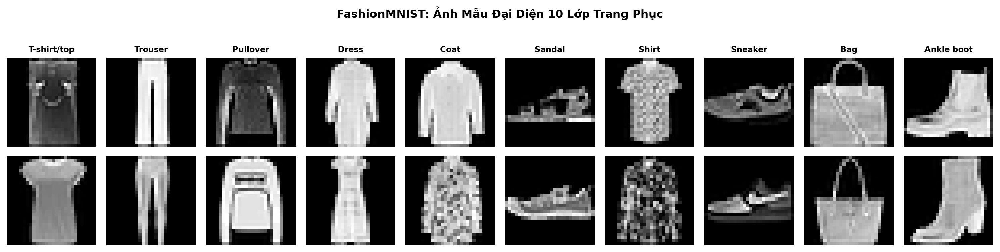
Hình: Ảnh mẫu đại diện mười lớp. Nguồn: outputs/published/preparation/eda/figures.
Ảnh mẫu kiểm tra nền, vị trí, hướng và nhãn theo trực giác. Một nhóm ảnh hợp lý không chứng minh mọi nhãn đúng; nó giúp nhận diện bất thường rõ ràng và thiết lập cách đọc các biểu đồ tiếp theo. Lấy ảnh đại diện mỗi lớp tránh một tập minh họa vô tình chỉ chứa vài nhóm phổ biến.
Không loại ảnh khó chỉ vì model dự đoán sai. Nếu dùng kết quả test để xóa mẫu hoặc chỉnh cấu hình rồi báo lại trên cùng test, benchmark đã thay đổi vai trò. Phiên bản hiện hành giữ dữ liệu theo split đã định, không có quy trình sửa nhãn thủ công được coi là đã hoàn thành.
2.2. Phân bố lớp và ảnh trung bình
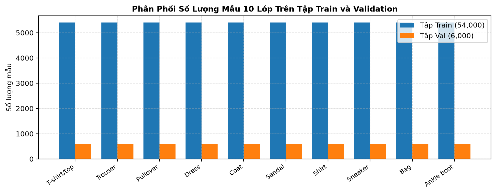
Hình: Phân bố train/validation. Nguồn: outputs/published/preparation/eda/figures.
Số mẫu mỗi lớp được giữ cân bằng trong train/validation. Điều này giảm nguy cơ accuracy cao chủ yếu nhờ đoán lớp đông. Cân bằng số lượng không làm các lớp dễ như nhau: Shirt, Coat, Pullover vẫn gần nhau hơn nhiều so với Trouser và Sandal về cấu trúc hình dáng.
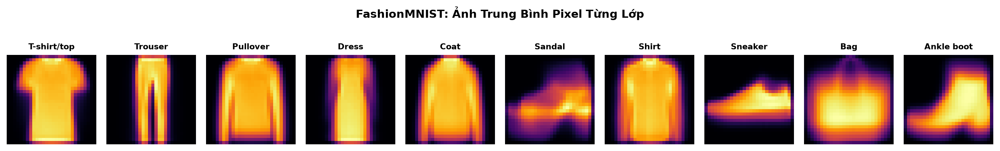
Hình: Ảnh trung bình theo lớp. Nguồn: outputs/published/preparation/eda/figures.
Ảnh trung bình lấy mean tại từng tọa độ của các ảnh cùng lớp trong train. Nó là silhouette tổng hợp, không phải một sản phẩm thật hay một mẫu test bổ sung. Các lớp áo có vùng thân/tay tương tự; quần thể hiện hai ống dọc; giày có dáng thấp và ngang.
Quan sát gợi ý sử dụng bbox width/height, aspect ratio và centroid. Tuy nhiên, phép trung bình làm mờ chi tiết mỗi sản phẩm. Hai lớp có ảnh trung bình gần nhau vẫn có thể tách bằng chi tiết cục bộ; ảnh trung bình khác nhau cũng không đảm bảo mọi mẫu riêng lẻ dễ phân loại.
Đọc cả số lượng và hình dáng giúp phân biệt hai giả thuyết: một lớp thiếu dữ liệu, hay các lớp vốn giống nhau. Với số lượng cân bằng, cần đối chiếu kết quả theo lớp với biểu diễn và dự đoán, không tự quy mọi chênh lệch cho mất cân bằng.
2.3. Phân bố pixel và chuẩn hóa cường độ
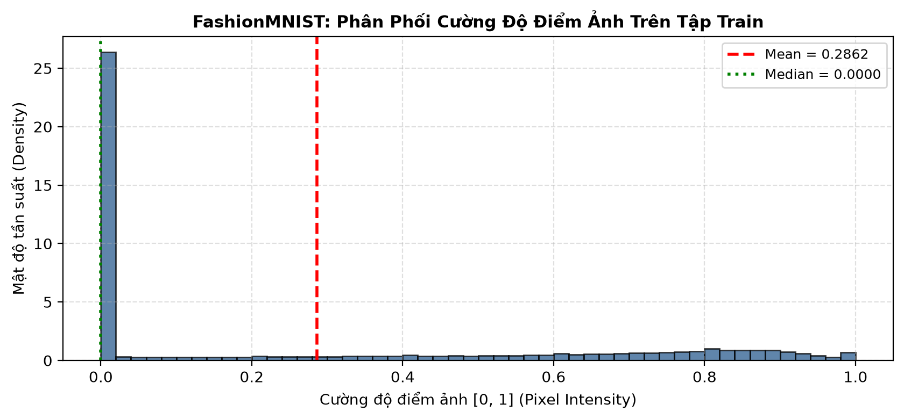
Hình: Phân bố cường độ pixel train. Nguồn: outputs/published/preparation/eda/figures.
Histogram lấy pixel từ phần train dùng để vẽ theo source; các đường mean/median mô tả train. Cột lớn gần 0 phản ánh nền đen. Median bằng 0 không có nghĩa các vật thể hoặc phần lớn ảnh đều rỗng. Trục mật độ không phải số lượng ảnh; diện tích histogram mới phản ánh tỷ lệ tương đối.
| Phạm vi / Lớp | Số lượng mẫu | Mean | Std | Median | Tỷ lệ pixel 0 | Min | Max |
|---|---|---|---|---|---|---|---|
| Toàn bộ tập Train | 54000 | 0.286200 | 0.353200 | 0.000000 | 0.502100 | 0.000000 | 1.000000 |
| Lớp 0 (T-shirt/top) | 5400 | 0.325600 | 0.350700 | 0.188200 | 0.406200 | 0.000000 | 1.000000 |
| Lớp 1 (Trouser) | 5400 | 0.223200 | 0.343600 | 0.000000 | 0.650900 | 0.000000 | 1.000000 |
| Lớp 2 (Pullover) | 5400 | 0.377100 | 0.359200 | 0.325500 | 0.351600 | 0.000000 | 1.000000 |
| Lớp 3 (Dress) | 5400 | 0.258500 | 0.354200 | 0.000000 | 0.573300 | 0.000000 | 1.000000 |
| Lớp 4 (Coat) | 5400 | 0.384900 | 0.376100 | 0.341200 | 0.398100 | 0.000000 | 1.000000 |
| Lớp 5 (Sandal) | 5400 | 0.136800 | 0.263100 | 0.000000 | 0.679000 | 0.000000 | 1.000000 |
| Lớp 6 (Shirt) | 5400 | 0.332700 | 0.339900 | 0.243100 | 0.371300 | 0.000000 | 1.000000 |
| Lớp 7 (Sneaker) | 5400 | 0.167900 | 0.294900 | 0.000000 | 0.661900 | 0.000000 | 1.000000 |
| Lớp 8 (Bag) | 5400 | 0.354000 | 0.365400 | 0.243100 | 0.413900 | 0.000000 | 1.000000 |
| Lớp 9 (Ankle boot) | 5400 | 0.301500 | 0.370700 | 0.000000 | 0.515200 | 0.000000 | 1.000000 |
preprocessing_config.json ghi mean 0,286209 và std 0,353160 gộp trên pixel train. Diagnostic mean std từng ảnh là 0,320661. Không dùng hai std thay nhau: độ biến thiên giữa các ảnh cũng đóng góp vào variance gộp. Tỷ lệ pixel 0 ở run hiện hành là 0,502143 theo file diagnostic, khác các số của bảng lịch sử.
PYTHON
Mã nguồn triển khai (PYTHON)
Nhấn để mở code ▾
scaled = images.astype(np.float32) / 255
standardized_pixels = (scaled - mean_train) / std_train
Rescaling đưa [0,255] về [0,1] và tạo miền nhất quán cho ngưỡng cường độ. Standardization đặt tâm và tỷ lệ theo train. Phép này không tự biến dữ liệu thành Gaussian và không làm từng ảnh có mean=0/std=1. Chỉ thống kê gộp trên tập fit có ý nghĩa tương ứng trong sai số tính toán.
2.4. Không gian pixel và tương đồng giữa lớp
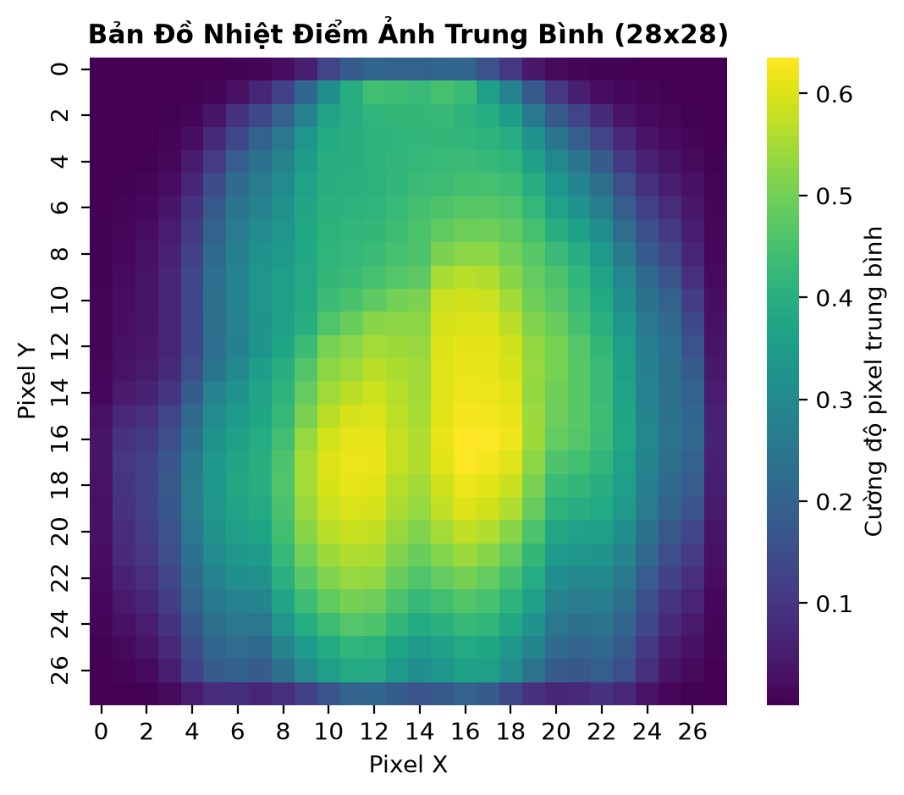
Hình: Bản đồ mean pixel. Nguồn: outputs/published/preparation/eda/figures.
Mean map trả lời vị trí nào thường chứa vùng sáng. Trung tâm cao hơn góc vì vật thể thường nằm giữa. Nó không phải attention map của model: đây là thống kê trước modeling, không có gradient hoặc phân tích quyết định mạng tham gia.
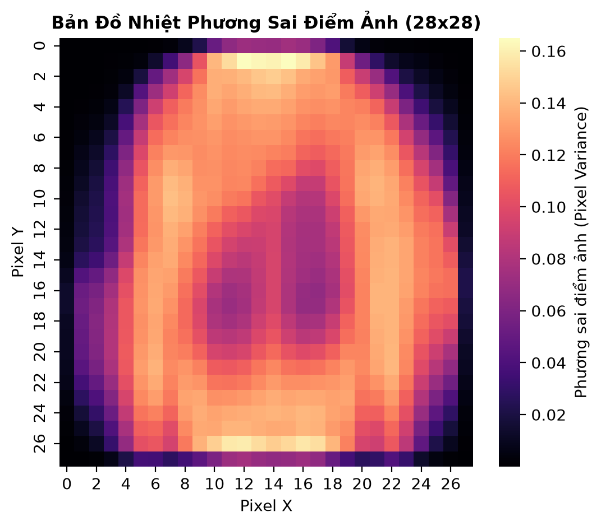
Hình: Bản đồ variance pixel. Nguồn: outputs/published/preparation/eda/figures.
Variance map mô tả mức thay đổi giữa các ảnh tại từng vị trí. Biên và vùng có khác biệt dáng có thể có variance cao, nhưng nhiễu hoặc biến thiên trong cùng lớp cũng góp phần. Không đồng nhất pixel biến thiên mạnh với pixel chắc chắn quan trọng nhất cho phân loại.
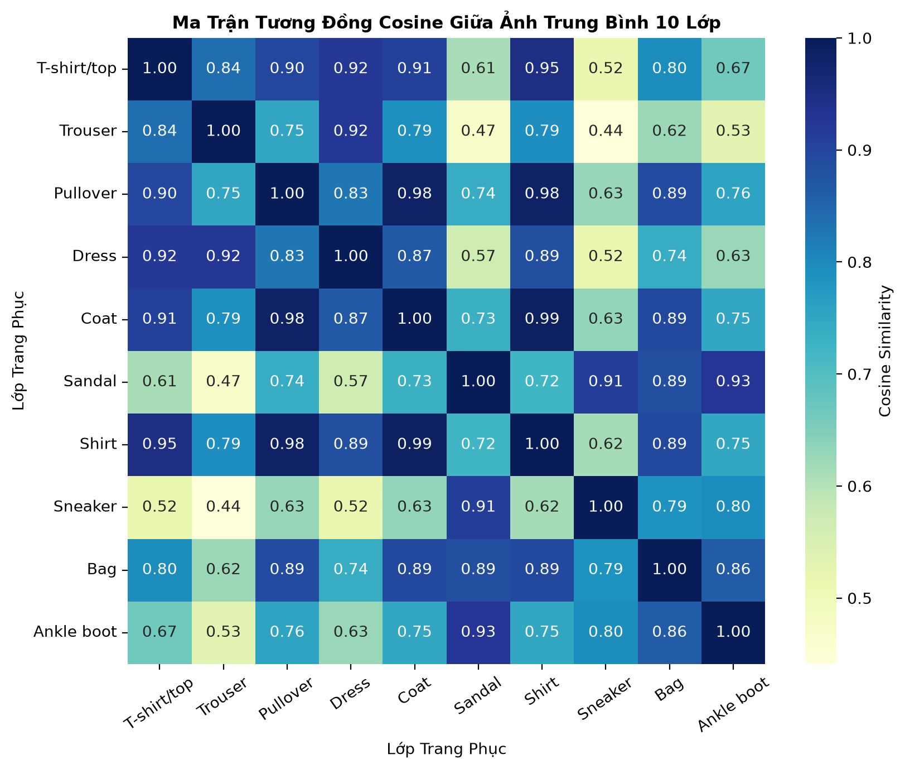
Hình: Cosine similarity giữa ảnh trung bình. Nguồn: outputs/published/preparation/eda/figures.
Cosine similarity so vector ảnh trung bình từng lớp. Coat–Shirt khoảng 0,99, Pullover–Coat khoảng 0,98 trong hình đang dẫn. Đây là mức giống silhouette trung bình, không phải xác suất nhầm hay tỷ lệ ảnh đúng. Confusion matrix ở phần kết quả mới đo hành vi model thực sự.
2.5. Thiết kế và công thức mười đặc trưng
Gọi I là ảnh float trong [0,1], H=W=28 và M là mask I>0,1. Mười đặc trưng được chọn từ cường độ, diện tích, kích thước, vị trí và cấu trúc biên. Mục tiêu là tạo mô tả nhỏ và giải thích được, theo phạm vi đã thống nhất chỉ bổ sung mười chiều thay vì hàng trăm chiều đặc trưng khác.
| Feature | Công thức | Ý nghĩa |
|---|---|---|
| mean | mean(I) | Mức sáng toàn ảnh |
| std | sqrt(mean((I-mean(I))²)) | Độ tương phản; ddof=0 |
| foreground_ratio | count(I>0.1)/784 | Diện tích foreground |
| bbox_width | width(M)/28 | Độ rộng hộp bao |
| bbox_height | height(M)/28 | Độ cao hộp bao |
| aspect_ratio | width(M)/height(M) | Dáng ngang/dọc; rỗng→0 |
| centroid_x | sum(x*I)/sum(I)/27 | Trọng tâm ngang; ảnh đen→0 |
| centroid_y | sum(y*I)/sum(I)/27 | Trọng tâm dọc; ảnh đen→0 |
| symmetry | 1-mean(abs(I-flip_horizontal(I))) | Tương đồng trái/phải |
| edge_density | count(abs(delta_neighbor)>0.1)/1512 | 756 cặp ngang + 756 cặp dọc |
Bbox width/height chia 28 vì đó là số pixel mỗi trục. Centroid chia 27 vì tọa độ chạy từ 0 đến 27. Aspect ratio có thể lớn hơn 1; giày thấp và dài ngang có ratio lớn. Việc đưa kích thước về tỷ lệ không thay StandardScaler vì các cột vẫn có phân bố khác nhau.
Mean/std mô tả độ sáng và tương phản; foreground ratio mô tả diện tích; bbox/ratio mô tả dáng; centroid mô tả phân bố khối lượng; symmetry và edge density mô tả cấu trúc. Ảnh một kênh không phù hợp đặc trưng màu RGB. Edge density đang dùng là phép chênh lệch lân cận đơn giản, không gọi là Canny hoặc một bộ phát hiện cạnh đã học.
Các feature đều là hàm của pixel, không mang thêm nguồn thông tin cảm biến. Chúng cung cấp biểu diễn tóm tắt thuận tiện cho một MLP có dung lượng và ngân sách hữu hạn. Nếu cải thiện, kết luận nên gắn với biểu diễn và quá trình học, không gọi đó là dữ liệu ngoài ảnh.
Chưa dùng HOG/LBP/PCA trong thiết kế hiện hành để giữ số chiều và cách giải thích rõ ràng. Việc chưa dùng không chứng minh các phương pháp đó kém; muốn so cần một protocol riêng giữ split, ngân sách và các điều kiện đánh giá tương ứng.
2.6. Code extractor và kiểm chứng tại notebook
Source chính nằm ở src/datasets/features.py. extract_features kiểm tra N×28×28 và giá trị hữu hạn trong [0,1], tạo mảng N×10 rồi tính từng hàng. foreground_bbox tìm giới hạn mask theo hàng/cột; measure_intensity dùng chung mean, std và chênh lệch lân cận.
PYTHON
Mã nguồn triển khai (PYTHON)
Nhấn để mở code ▾
scaled = images.astype(np.float32) / 255
features = extract_features(scaled)
Đoạn này được prepare_data thực hiện cho cả train, validation và test. Không có ba công thức FE khác nhau cho ba split. Pixel chuẩn hóa được giữ riêng; MainMLP_FE chỉ nối thêm vector feature trong loader, không sửa nhãn hoặc lấy thống kê test để fit.
Notebook tính lại mười ảnh train theo original_index, so với train_features.csv, đối chiếu labels/indices, rồi dùng scaler train so với prepared.npz. Mười ảnh là mẫu kiểm chứng dễ đọc, không có nghĩa chỉ tạo mười hàng. Shape dữ liệu đầy đủ được trình bày ở mục handoff.
Ảnh không có foreground nhận bbox/ratio bằng 0. Nếu tổng cường độ bằng 0, centroid bằng 0 để tránh chia 0; symmetry bằng 1 do ảnh trùng bản lật. Đây là quy ước số học, không gọi ảnh rỗng là một trang phục đối xứng. Ngưỡng 0,1 là cố định, chưa được tối ưu bằng validation.
Bảng handcrafted tổng hợp theo lớp trong preparation run lịch sử có định nghĩa khác một phần với feature modeling, nhất là edge density. Báo cáo lấy công thức modeling từ extractor và không dùng cột thống kê lịch sử để thay cho vector theo ảnh. Các giá trị pixel và feature được kiểm chứng riêng, tránh việc một bảng đúng shape nhưng không cùng ý nghĩa bị dùng sai.
2.7. StandardScaler và phân bố feature
Scaler fit mỗi cột trên 54.000 train. Với feature j, z_j=(f_j−μ_j)/s_j. Validation/test chỉ transform bằng cùng μ_j,s_j. Pixel có một mean/std gộp, feature có mười cặp tham số; không dùng scaler này thay cho scaler kia.
PYTHON
Mã nguồn triển khai (PYTHON)
Nhấn để mở code ▾
scaler.fit(train_features)
train_z = scaler.transform(train_features)
val_z = scaler.transform(val_features)
test_z = scaler.transform(test_features)
Đây là đoạn mô tả phương pháp. Implementation fit trong nhánh train rồi transform từng split ở vòng lặp. File feature_scaler.json giữ thứ tự tên cột, mean, scale, fit_split. Việc lưu thứ tự cũng quan trọng như giá trị scaler: tráo centroid_x và symmetry sẽ tạo input khác dù cả hai là số thực hợp lệ.
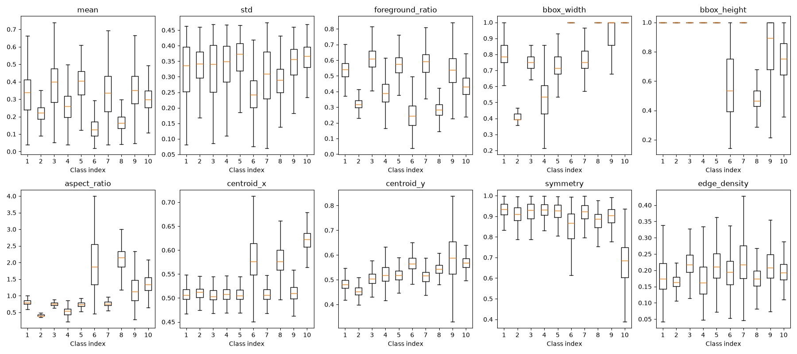
Hình: Phân bố mười feature theo lớp. Nguồn: outputs/published/preparation.
Boxplot biểu diễn phân bố theo lớp. Vạch trong hộp là median; hộp là vùng phân vị 25%–75%; các outlier bị ẩn theo cấu hình vẽ, không có nghĩa dữ liệu không có giá trị xa. Các hộp chồng lấn cho thấy một cột riêng lẻ không tách hoàn toàn nhãn. Trouser có bbox width nhỏ; các lớp giày có aspect ratio cao hơn, phù hợp ảnh mẫu.
Trong hình lịch sử, vị trí 1–10 tương ứng class 0–9. Dataset không có class 10. Mã tạo run mới đã gán tick đúng 0–9; ảnh cũ được giữ nguyên để tôn trọng bằng chứng nguồn. Thứ tự lớp, không phải số tick được tự suy đoán, là cơ sở đọc hình.
2.8. Hình học, tương quan và đóng gói dữ liệu
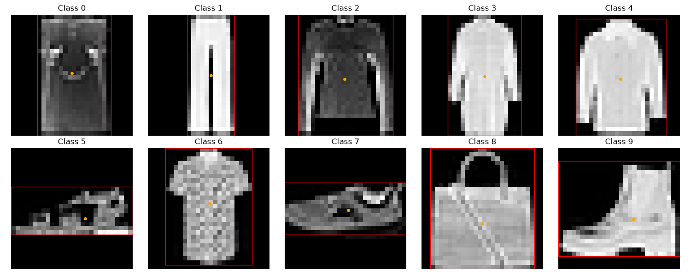
Hình: Bounding box và centroid. Nguồn: outputs/published/preparation.
Khung đỏ bao foreground; chấm cam là centroid cường độ. Ví dụ Trouser cao/hẹp, Sandal và Sneaker thấp/ngang. Hình kiểm tra công thức và tọa độ, chưa phải bằng chứng định lượng về khả năng phân loại toàn bộ dataset. Bbox gần full width không chứng minh ảnh chứa vật thể ngoài khung; cần đọc pixel/ngưỡng cụ thể.
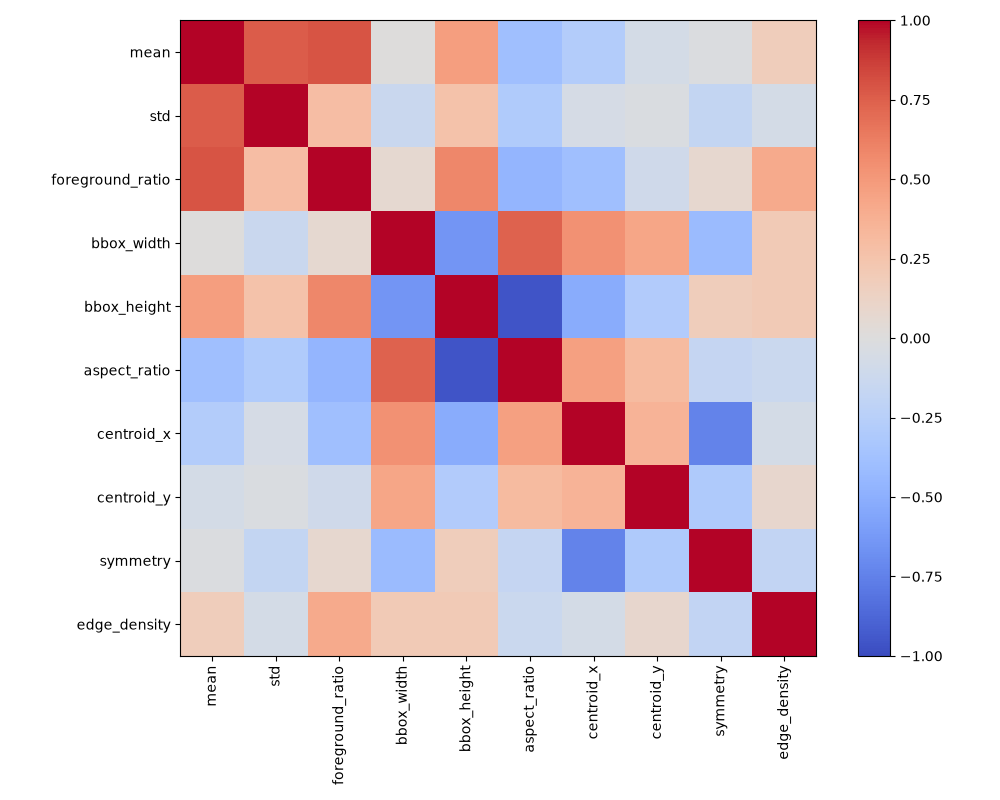
Hình: Correlation của feature train. Nguồn: outputs/published/preparation.
Correlation tính trên feature train. Mean và foreground ratio có quan hệ dương; bbox height và aspect ratio có quan hệ âm mạnh. Điều đó phù hợp tỷ số width/height phụ thuộc kích thước. Correlation không phải feature importance; muốn kết luận bỏ một cột không giảm kết quả cần ablation.
| Mảng | Shape | Dtype |
|---|---|---|
| train_pixels | (54000, 784) | float32 |
| train_features | (54000, 10) | float32 |
| train_labels | (54000,) | uint8 |
| train_indices | (54000,) | int64 |
| val_pixels | (6000, 784) | float32 |
| val_features | (6000, 10) | float32 |
| val_labels | (6000,) | uint8 |
| val_indices | (6000,) | int64 |
| test_pixels | (10000, 784) | float32 |
| test_features | (10000, 10) | float32 |
| test_labels | (10000,) | uint8 |
| test_indices | (10000,) | int64 |
prepared.npz giữ pixel, feature, labels, indices theo split. CSV per-image giữ giá trị chưa StandardScaler để đọc hiểu; NPZ giữ giá trị chuẩn hóa để train. Ghép đúng thứ tự ảnh là bắt buộc: vector đúng shape nhưng thuộc ảnh khác vẫn có thể chạy và tạo kết quả sai về ngữ nghĩa.
Không augmentation trong comparison giúp pixel và feature cùng mô tả ảnh gốc. Nếu thêm flip/rotation/crop sau này phải trích feature trên chính ảnh đã biến đổi. Dùng feature ảnh gốc với pixel augment là một thay đổi cần kiểm chứng, không thể tự coi tương đương.
2.9. Ba MLP và số lượng tham số
| Model | Kiến trúc | Tầng ẩn | Tham số |
|---|---|---|---|
| SmallMLP | 784→128→10 | 1 | 101770 |
| MainMLP | 784→256→128→10 | 2 | 235146 |
| MainMLP_FE | 794→256→128→10 | 2 | 237706 |
Linear có a×b weight và b bias, tổng b(a+1). ReLU không có tham số học, Flatten chỉ đổi shape. Output trả logits, không thêm softmax trước CrossEntropyLoss. Cùng class FashionMLP tạo ba cấu hình thông qua in_features và hidden_dims; cách này giữ implementation forward nhất quán.
SmallMLP có 784×128+128=100.480 ở tầng đầu và 128×10+10=1.290 ở output, tổng 101.770. MainMLP có 200.960+32.896+1.290=235.146. MainMLP_FE có tầng đầu 794×256+256=203.520, tổng 237.706. FE tăng 10×256=2.560 weight, khoảng 1,09% so với MainMLP.
Hai tầng ẩn cho phép nhiều biến đổi phi tuyến hơn nhưng không bảo đảm tổng quát hóa tốt hơn. Small/Main đồng thời khác độ sâu và số neuron, nên là khảo sát kiến trúc/dung lượng tổng hợp, không cô lập riêng độ sâu. Main/Main_FE giữ tầng ẩn, thay biểu diễn input và tăng nhẹ số weight.
Mô hình hiện hành không có BatchNorm, Dropout hoặc convolution. Các mô tả regularization ở kiến trúc lịch sử không áp dụng cho benchmark mới. Trong báo cáo, tên model luôn gắn với kích thước và artifact để tránh hai mạng khác nhau cùng được gọi mơ hồ là “tuned MLP”.
2.10. Forward, cross-entropy và training loop
Linear tính h=Wx+b, ReLU giữ max(0,h), output tạo mười logits z. Cross-entropy của nhãn y tương đương −z_y+log(sum(exp(z_k))). Trong code gọi trực tiếp criterion(logits,targets). Softmax được dùng khi đánh giá probabilities chứ không đặt trước loss này.
PYTHON
Mã nguồn triển khai (PYTHON)
Nhấn để mở code ▾
optimizer.zero_grad(set_to_none=True)
logits = model(images)
loss = criterion(logits, targets)
loss.backward()
optimizer.step()
Train accuracy tính trên batch trong lúc weight đang đổi; validation đo sau epoch với weight tại thời điểm đó. Vì cách đo khác nhau, không yêu cầu train/validation có thứ tự cố định ở mọi epoch. Một giao điểm đơn lẻ không đủ kết luận pipeline hỏng.
Loss epoch được cộng có trọng số số mẫu, tránh batch cuối nhỏ được tính ngang batch đầy. Loader shuffle train, có generator seed; validation/test giữ thứ tự để đối chiếu probabilities/labels. Labels không được shuffle độc lập với input.
Cấu hình comparison chính là 10 epoch, batch 128, seed 42, Adam LR 0,001 và weight_decay=0. CosineAnnealingLR giảm LR theo lịch, không dừng sớm và không phải làm mượt đường cong sau đo. Checkpoint chọn theo validation accuracy; epoch có loss thấp nhất có thể khác epoch best accuracy.
2.11. Sanity overfit, checkpoint và môi trường
Trước mỗi model, probe instance được yêu cầu overfit tám mẫu trong 120 bước. Điều kiện sanity gồm loss dưới 0,20 và accuracy trên 80%. Đây là kiểm tra input–gradient–optimizer, không phải đánh giá held-out. Sau đó reset seed, model và loader để probe không trở thành khởi tạo đã học trước.
| Model | Passed | Loss sanity | Accuracy (%) |
|---|---|---|---|
| SmallMLP | True | 6.392485375e-06 | 100.000000 |
| MainMLP | True | 1.490116031e-08 | 100.000000 |
| MainMLP_FE | True | 1.043080857e-07 | 100.000000 |
Snapshot refit ghi CPython 3.13.15, Windows 11, PyTorch 2.14.0+cpu, NumPy 2.5.3, scikit-learn 1.9.1; CUDA không khả dụng. Đây là môi trường run, không phải lời khẳng định phiên bản Kaggle giống local. Requirements và phiên bản thực tế phải phân biệt khi tái lập.
best.pt được cập nhật khi validation accuracy tăng. History JSON/CSV lưu sau epoch. Model nạp lại best trước test, do đó test không mặc định dùng weight epoch cuối. Việc lưu đều các artifact giúp đối chiếu model, epoch và dữ liệu mà không cần suy từ tên file hình.
Seed không đảm bảo mọi phần cứng tái tạo đúng từng bit. Phiên bản thư viện, thứ tự batch, backend và thuật toán GPU cũng ảnh hưởng. Báo cáo chỉ khẳng định bằng chứng đã kiểm tra, không mở rộng thành cam kết cross-device deterministic khi chưa đo.
2.12. Thiết kế so sánh optimizer và search
Fixed LR giữ MainMLP pixel; SGD/RMSprop/Adam cùng LR=0,001, batch 128, seed 42, 10 epoch và scheduler. SGD dùng momentum 0,9. RMSprop trong source có momentum mặc định 0; Adam dùng các moment theo thuật toán. Momentum=0 ở RMSprop là cấu hình của lab, không phải ràng buộc bắt buộc của thư viện.
Cùng LR trả lời hiệu quả dưới một giá trị chung, không trả lời optimizer nào tốt nhất khi được cấu hình riêng. SGD có thể cần thang LR khác adaptive optimizer. Nhánh search vì vậy cho khoảng tham số riêng trong điều kiện vẫn giữ cùng bài toán và ngân sách tối đa.
| Optimizer | LR | Weight decay | Momentum |
|---|---|---|---|
| SGD | [0.001,0.1], log | [1e-7,0.01], log | [0.8,0.95] |
| RMSprop | [0.0001,0.01], log | [1e-7,0.01], log | 0 (không tune) |
| Adam | [0.0001,0.01], log | [1e-7,0.01], log | Không phải tham số SGD |
Từng optimizer có study độc lập với tối đa 10 trial, 10 epoch/trial, objective best validation accuracy. Miền weight_decay dương theo log không chứa baseline weight_decay=0. Baseline không được enqueue nên best trong search không có bảo đảm thắng baseline.
TPESampler có 10 startup trials; ngân sách cũng bằng 10 nên lượt này chưa vào pha đề xuất TPE thích nghi. Cần gọi đúng là study dùng cấu hình TPE nhưng ở pha lấy mẫu khởi động, không dùng kết quả để chứng minh Bayesian search tốt hơn random search.
MedianPruner dùng ba startup trials, hai warmup steps. Pruned trial giữ lịch sử một phần, không phải lỗi phần mềm. Ngân sách tối đa bằng nhau không có nghĩa cùng số epoch thực chạy hoặc cùng thời gian, vì pruning và chi phí cập nhật của optimizer khác nhau.
2.13. Metric đa lớp, ROC và Precision–Recall
Theo one-vs-rest, Precision=TP/(TP+FP), Recall=TP/(TP+FN), F1=2PR/(P+R), TPR=Recall, FPR=FP/(FP+TN). Accuracy đa lớp là tổng đường chéo confusion matrix chia tổng mẫu. Macro lấy trung bình đều qua mười lớp, giữ mỗi lớp cùng tầm quan trọng.
Trong test cân bằng, macro recall bằng accuracy theo đại số khi support các lớp bằng nhau. Không vì vậy bỏ bảng per-class: cùng accuracy vẫn có thể phân bố dự đoán khác nhau theo lớp, precision/F1 khác nhau và mức bỏ sót khác nhau.
ROC OvR thay ngưỡng xác suất một lớp so với chín lớp còn lại, vẽ TPR theo FPR. AUC đo xếp hạng theo ngưỡng, không phải tỷ lệ đúng dưới argmax. Một lớp AUC cao vẫn có thể nhầm với lớp gần nhất khi quyết định mười lớp cạnh tranh.
PR vẽ precision theo recall. AP tính bằng average_precision_score là tổng precision có trọng số bước tăng recall, không tự gọi là tích phân hình thang PR. Mỗi OvR có tỷ lệ dương 0,1; một FPR nhỏ vẫn có thể tạo nhiều FP vì tập âm lớn.
Mỗi model có một hình hai panel, mỗi panel mười đường. Thiết kế không bổ sung biểu đồ cột TPR/FPR hoặc F1 heatmap; các metric vẫn được giữ trong bảng để đọc số. CSV tọa độ curve giúp kiểm tra thay vì ước lượng từ ảnh raster.
3. KẾT QUẢ, THẢO LUẬN VÀ KẾT LUẬN
3.1. So sánh tổng thể ba cấu hình
| Model | Test Accuracy (%) | Macro F1 | Macro Precision | Macro Recall | Test loss | Tham số | Train seconds |
|---|---|---|---|---|---|---|---|
| SmallMLP | 88.520000 | 0.884948 | 0.885057 | 0.885200 | 0.321349 | 101770 | 8.267886 |
| MainMLP | 89.410000 | 0.893813 | 0.893829 | 0.894100 | 0.307877 | 235146 | 15.801394 |
| MainMLP_FE | 89.600000 | 0.895752 | 0.895731 | 0.896000 | 0.300210 | 237706 | 78.010613 |
SmallMLP đạt 88,52% với 101.770 tham số. MainMLP đạt 89,41%, tăng 0,89 điểm phần trăm, thêm 133.376 tham số. MainMLP_FE đạt 89,60%, tăng thêm 0,19 điểm phần trăm, tương ứng 19 dự đoán đúng ròng trên 10.000 test. Đúng ròng không có nghĩa chỉ có 19 ảnh đổi kết quả giữa hai model.
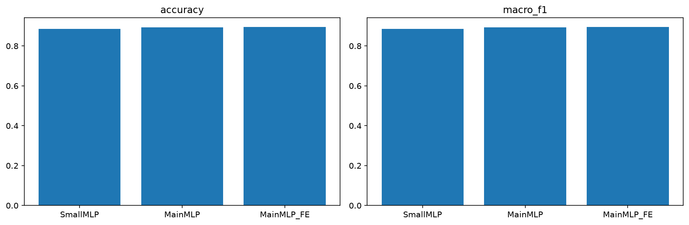
Hình: So sánh test accuracy và Macro F1. Nguồn: outputs/published/comparison.
Loss giảm từ 0,32135 xuống 0,30788 khi tăng model, rồi xuống 0,30021 khi thêm feature; macro F1 cũng tăng. Nhiều metric cùng chiều làm kết luận mô tả nhất quán hơn việc chỉ chọn một chỉ số có lợi, nhưng không thay thế kiểm định hoặc nhiều seed.
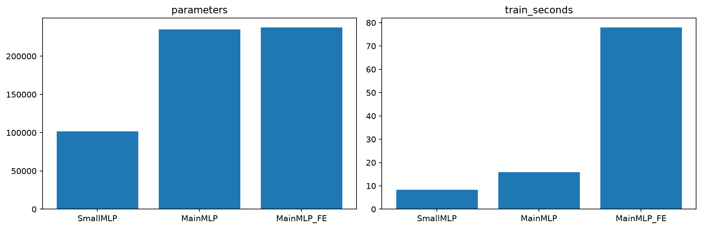
Hình: Số tham số và thời gian ghi trong run. Nguồn: outputs/published/comparison.
Thời gian ghi trong các run khoảng 8,27 s, 15,80 s và 78,01 s cho vòng training. Đây là wall-clock của thời điểm/môi trường cụ thể, không phải benchmark phần cứng lặp có kiểm soát hoặc tổng chi phí EDA/FE. Không quy toàn bộ chênh thời gian FE chỉ cho mười chiều bổ sung khi chưa profile và lặp đo.
SmallMLP là mốc tiết kiệm tham số; MainMLP tăng hiệu năng; FE có mức tăng nhỏ trong lần chạy này. Quyết định dùng cần cân nhắc chi phí, khả năng giải thích và ổn định. Chưa thể gọi model có điểm cao nhất trong một lượt là lựa chọn tốt nhất cho mọi bối cảnh.
3.2. Đường học và lựa chọn epoch
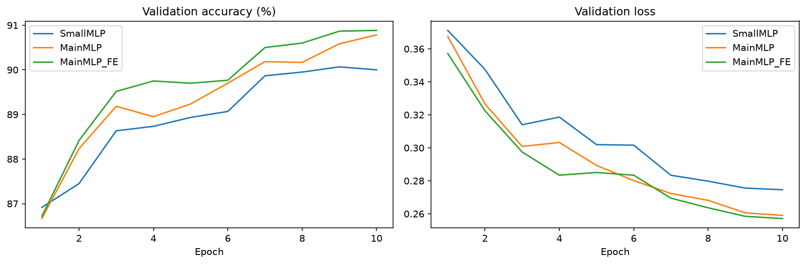
Hình: Validation curves của ba cấu hình. Nguồn: outputs/published/comparison.
Validation curve chung cho phép so tiến trình trong cùng ngân sách epoch. Accuracy chỉ quan tâm argmax, loss nhạy với xác suất của nhãn thật. Accuracy gần giữ nguyên nhưng loss giảm có thể phản ánh độ tin cậy thay đổi thay vì thêm nhiều mẫu đúng. Cần đọc hai panel cùng nhau.
| Model | Epoch | Train loss | Train acc (%) | Val loss | Val acc (%) | Chọn checkpoint |
|---|---|---|---|---|---|---|
| SmallMLP | 1 | 0.502208 | 82.125926 | 0.371180 | 86.916667 | |
| SmallMLP | 2 | 0.371231 | 86.551852 | 0.347556 | 87.450000 | |
| SmallMLP | 3 | 0.332625 | 87.842593 | 0.313997 | 88.633333 | |
| SmallMLP | 4 | 0.304879 | 88.737037 | 0.318641 | 88.733333 | |
| SmallMLP | 5 | 0.281354 | 89.698148 | 0.301947 | 88.933333 | |
| SmallMLP | 6 | 0.263959 | 90.329630 | 0.301612 | 89.066667 | |
| SmallMLP | 7 | 0.247613 | 90.957407 | 0.283376 | 89.866667 | |
| SmallMLP | 8 | 0.234611 | 91.550000 | 0.279783 | 89.950000 | |
| SmallMLP | 9 | 0.225632 | 91.851852 | 0.275583 | 90.066667 | best |
| SmallMLP | 10 | 0.220185 | 92.129630 | 0.274577 | 90.000000 | |
| MainMLP | 1 | 0.499460 | 82.040741 | 0.367541 | 86.666667 | |
| MainMLP | 2 | 0.356585 | 86.833333 | 0.326612 | 88.233333 | |
| MainMLP | 3 | 0.314804 | 88.368519 | 0.300853 | 89.183333 | |
| MainMLP | 4 | 0.285062 | 89.277778 | 0.303258 | 88.950000 | |
| MainMLP | 5 | 0.258085 | 90.318519 | 0.289346 | 89.233333 | |
| MainMLP | 6 | 0.236890 | 91.085185 | 0.280135 | 89.700000 | |
| MainMLP | 7 | 0.214476 | 91.857407 | 0.272305 | 90.183333 | |
| MainMLP | 8 | 0.195766 | 92.800000 | 0.268179 | 90.166667 | |
| MainMLP | 9 | 0.182423 | 93.246296 | 0.260578 | 90.583333 | |
| MainMLP | 10 | 0.173971 | 93.685185 | 0.259042 | 90.783333 | best |
| MainMLP_FE | 1 | 0.487109 | 82.505556 | 0.357207 | 86.716667 | |
| MainMLP_FE | 2 | 0.345509 | 87.385185 | 0.322468 | 88.416667 | |
| MainMLP_FE | 3 | 0.307385 | 88.596296 | 0.297457 | 89.516667 | |
| MainMLP_FE | 4 | 0.276685 | 89.690741 | 0.283412 | 89.750000 | |
| MainMLP_FE | 5 | 0.249318 | 90.740741 | 0.285061 | 89.700000 | |
| MainMLP_FE | 6 | 0.229083 | 91.433333 | 0.283407 | 89.766667 | |
| MainMLP_FE | 7 | 0.206807 | 92.259259 | 0.269476 | 90.500000 | |
| MainMLP_FE | 8 | 0.188905 | 93.122222 | 0.263652 | 90.600000 | |
| MainMLP_FE | 9 | 0.175663 | 93.655556 | 0.258465 | 90.866667 | |
| MainMLP_FE | 10 | 0.167678 | 93.914815 | 0.257128 | 90.883333 | best |
Cuối training, train accuracy cao hơn validation ở ba cấu hình. Đây là khoảng cách tổng quát hóa quan sát được, chưa đủ gọi overfitting nghiêm trọng. Cần xem xu hướng validation theo epoch, lặp seed và ngân sách. Trong lịch sử hiện có, validation loss nhìn chung giảm về cuối.
SmallMLP chọn epoch 9 theo validation accuracy dù epoch 10 có loss thấp hơn. MainMLP và MainMLP_FE chọn epoch 10. Ví dụ cho thấy best loss và best accuracy có thể chọn checkpoint khác nhau. Báo cáo dùng quy tắc best validation accuracy nhất quán thay vì chọn tiêu chí có lợi cho từng model.
Không đánh giá test ở mọi epoch rồi chọn epoch có test tốt nhất: như vậy test đã thành validation bổ sung. Các bảng history ở đây phục vụ đọc hội tụ, không phải căn cứ để thay đổi quyết định sau khi xem test.
3.3. Metric theo lớp và confusion matrix
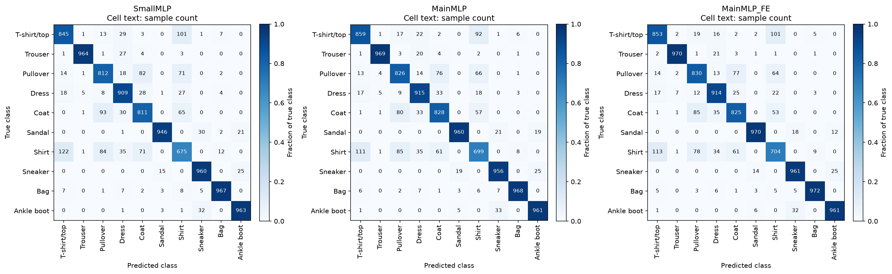
Hình: Confusion matrix ba model: counts và màu tỷ lệ. Nguồn: outputs/published/comparison.
Số trong ô là count nguyên; màu là tỷ lệ theo hàng trong cùng miền [0,1]. Trục dọc lớp thật, trục ngang dự đoán. Mỗi hàng test có 1.000 mẫu nên count/1.000 là tỷ lệ trong lớp thật đó. Biểu diễn giữ giá trị cụ thể và cho phép so pattern giữa model.
SmallMLP — metric theo lớp (%).
| Lớp | Support | Precision | Recall/TPR | F1 | FPR |
|---|---|---|---|---|---|
| T-shirt/top | 1000 | 83.912612 | 84.500000 | 84.205282 | 1.800000 |
| Trouser | 1000 | 99.075026 | 96.400000 | 97.719209 | 0.100000 |
| Pullover | 1000 | 80.237154 | 81.200000 | 80.715706 | 2.222222 |
| Dress | 1000 | 85.998108 | 90.900000 | 88.381138 | 1.644444 |
| Coat | 1000 | 81.018981 | 81.100000 | 81.059470 | 2.111111 |
| Sandal | 1000 | 97.727273 | 94.600000 | 96.138211 | 0.244444 |
| Shirt | 1000 | 70.977918 | 67.500000 | 69.195284 | 3.066667 |
| Sneaker | 1000 | 93.385214 | 96.000000 | 94.674556 | 0.755556 |
| Bag | 1000 | 97.283702 | 96.700000 | 96.990973 | 0.300000 |
| Ankle boot | 1000 | 95.441031 | 96.300000 | 95.868591 | 0.511111 |
MainMLP — metric theo lớp (%).
| Lớp | Support | Precision | Recall/TPR | F1 | FPR |
|---|---|---|---|---|---|
| T-shirt/top | 1000 | 85.133796 | 85.900000 | 85.515182 | 1.666667 |
| Trouser | 1000 | 98.776758 | 96.900000 | 97.829379 | 0.133333 |
| Pullover | 1000 | 80.821918 | 82.600000 | 81.701286 | 2.177778 |
| Dress | 1000 | 87.476099 | 91.500000 | 89.442815 | 1.455556 |
| Coat | 1000 | 82.388060 | 82.800000 | 82.593516 | 1.966667 |
| Sandal | 1000 | 97.264438 | 96.000000 | 96.628083 | 0.300000 |
| Shirt | 1000 | 74.361702 | 69.900000 | 72.061856 | 2.677778 |
| Sneaker | 1000 | 93.909627 | 95.600000 | 94.747275 | 0.688889 |
| Bag | 1000 | 98.074975 | 96.800000 | 97.433317 | 0.211111 |
| Ankle boot | 1000 | 95.621891 | 96.100000 | 95.860349 | 0.488889 |
MainMLP_FE — metric theo lớp (%).
| Lớp | Support | Precision | Recall/TPR | F1 | FPR |
|---|---|---|---|---|---|
| T-shirt/top | 1000 | 84.791252 | 85.300000 | 85.044865 | 1.700000 |
| Trouser | 1000 | 98.677518 | 97.000000 | 97.831568 | 0.144444 |
| Pullover | 1000 | 80.739300 | 83.000000 | 81.854043 | 2.200000 |
| Dress | 1000 | 87.969201 | 91.400000 | 89.651790 | 1.388889 |
| Coat | 1000 | 82.997988 | 82.500000 | 82.748245 | 1.877778 |
| Sandal | 1000 | 97.389558 | 97.000000 | 97.194389 | 0.288889 |
| Shirt | 1000 | 74.105263 | 70.400000 | 72.205128 | 2.733333 |
| Sneaker | 1000 | 94.586614 | 96.100000 | 95.337302 | 0.611111 |
| Bag | 1000 | 98.181818 | 97.200000 | 97.688442 | 0.200000 |
| Ankle boot | 1000 | 96.292585 | 96.100000 | 96.196196 | 0.411111 |
TPR thấp không nhất thiết đồng nghĩa FPR cao nhất. Một lớp có thể thường bị bỏ sót nhưng ít bị đoán nhầm vào, hoặc ngược lại. Vì vậy bảng giữ Precision, Recall, F1, FPR riêng. FPR có denominator 9.000 âm tính, khác denominator của precision; không so chúng như thể cùng tập nền.
-
SmallMLP: recall thấp nhất là Shirt (67.50%). Các hướng dự đoán khác nhãn lớn nhất: Shirt → T-shirt/top: 122/1.000 (12.2%); T-shirt/top → Shirt: 101/1.000 (10.1%); Coat → Pullover: 93/1.000 (9.3%).
-
MainMLP: recall thấp nhất là Shirt (69.90%). Các hướng dự đoán khác nhãn lớn nhất: Shirt → T-shirt/top: 111/1.000 (11.1%); T-shirt/top → Shirt: 92/1.000 (9.2%); Shirt → Pullover: 85/1.000 (8.5%).
-
MainMLP_FE: recall thấp nhất là Shirt (70.40%). Các hướng dự đoán khác nhãn lớn nhất: Shirt → T-shirt/top: 113/1.000 (11.3%); T-shirt/top → Shirt: 101/1.000 (10.1%); Coat → Pullover: 85/1.000 (8.5%).
Các nhận xét là mô tả hiệu năng theo lớp, không quy chắc chắn cho một feature cụ thể. Muốn chứng minh centroid hay symmetry cải thiện một lớp cần ablation từng feature/nhóm feature. Mười feature hiện được đánh giá như một gói biểu diễn. Phân tích lớp ở đây nhằm diễn giải kết quả học, không phải nhật ký sửa lỗi phần mềm.
3.4. ROC và Precision–Recall của ba model
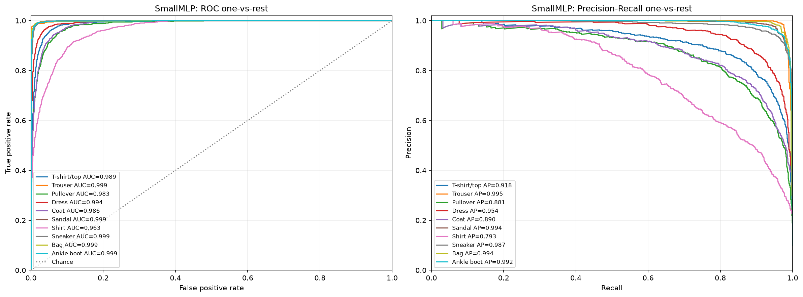
Hình: SmallMLP — ROC và PR OvR. Nguồn: outputs/published/comparison.
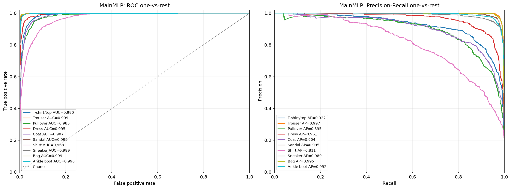
Hình: MainMLP — ROC và PR OvR. Nguồn: outputs/published/comparison.
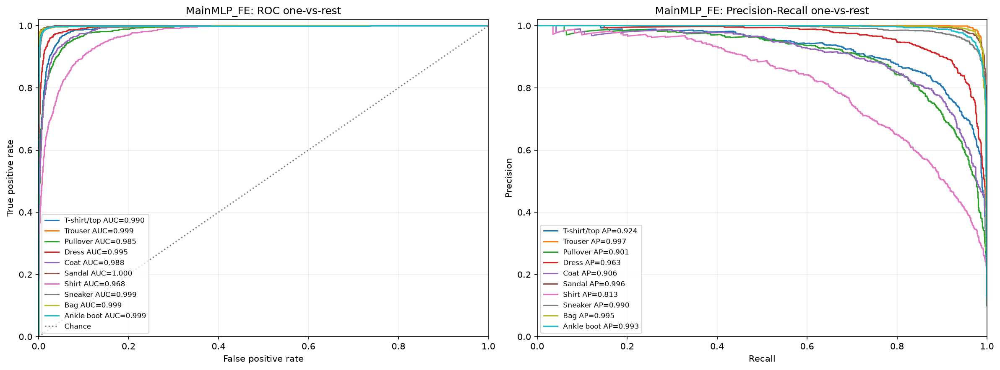
Hình: MainMLP_FE — ROC và PR OvR. Nguồn: outputs/published/comparison.
Ba hình dùng cùng test và lớp nhãn. Mỗi màu là một OvR; tách theo model tránh chồng 30 đường vào một panel. ROC mô tả phát hiện dương và false positive; PR mô tả chất lượng dự đoán dương khi tăng độ bao phủ. Các curve không phải kết quả training trên test.
| name | roc_auc | average_precision |
|---|---|---|
| MainMLP | 0.991944 | 0.946033 |
| MainMLP_FE | 0.992186 | 0.947997 |
| SmallMLP | 0.990959 | 0.939827 |
| name | class_name | roc_auc | average_precision |
|---|---|---|---|
| SmallMLP | T-shirt/top | 0.989473 | 0.918252 |
| SmallMLP | Trouser | 0.999216 | 0.995091 |
| SmallMLP | Pullover | 0.983192 | 0.880900 |
| SmallMLP | Dress | 0.993730 | 0.954465 |
| SmallMLP | Coat | 0.985509 | 0.889966 |
| SmallMLP | Sandal | 0.999220 | 0.993621 |
| SmallMLP | Shirt | 0.963095 | 0.792842 |
| SmallMLP | Sneaker | 0.998552 | 0.986699 |
| SmallMLP | Bag | 0.998765 | 0.993967 |
| SmallMLP | Ankle boot | 0.998838 | 0.992466 |
| MainMLP | T-shirt/top | 0.989793 | 0.922183 |
| MainMLP | Trouser | 0.999472 | 0.996881 |
| MainMLP | Pullover | 0.984818 | 0.894834 |
| MainMLP | Dress | 0.994610 | 0.960993 |
| MainMLP | Coat | 0.987234 | 0.903761 |
| MainMLP | Sandal | 0.999394 | 0.994998 |
| MainMLP | Shirt | 0.967822 | 0.810554 |
| MainMLP | Sneaker | 0.998754 | 0.988751 |
| MainMLP | Bag | 0.999091 | 0.995402 |
| MainMLP | Ankle boot | 0.998451 | 0.991970 |
| MainMLP_FE | T-shirt/top | 0.990035 | 0.924276 |
| MainMLP_FE | Trouser | 0.999477 | 0.996802 |
| MainMLP_FE | Pullover | 0.985437 | 0.901306 |
| MainMLP_FE | Dress | 0.994988 | 0.963259 |
| MainMLP_FE | Coat | 0.987639 | 0.906408 |
| MainMLP_FE | Sandal | 0.999569 | 0.996320 |
| MainMLP_FE | Shirt | 0.968405 | 0.813140 |
| MainMLP_FE | Sneaker | 0.998881 | 0.990053 |
| MainMLP_FE | Bag | 0.998913 | 0.995224 |
| MainMLP_FE | Ankle boot | 0.998521 | 0.993185 |
Bảng là trung bình số học AUC/AP qua lớp từ ovr_scores_by_class.csv. Phải phân biệt với quy trình nội suy một ROC macro rồi tích phân; không mặc định hai cách tổng hợp cho cùng giá trị chính xác. AP cũng không được thay bằng AUC-ROC trong văn bản.
AUC cao không có nghĩa phân loại gần hoàn hảo. Argmax cạnh tranh mười logits; OvR đánh giá một lớp với tập gộp còn lại. Các lớp áo có thể xếp hạng tốt so với đa số lớp khác nhưng vẫn nhầm khi cạnh tranh với một lớp áo gần nhất.
PR hữu ích vì OvR có 10% dương, 90% âm. Tập âm lớn khiến một FPR nhỏ vẫn có thể tạo lượng FP đáng kể, trong khi precision phản ánh trực tiếp tỷ lệ đúng trong nhóm được dự đoán dương. Giữ cả hai giúp diễn giải đầy đủ hơn một con số accuracy duy nhất.
3.5. Optimizer trong điều kiện cùng learning rate
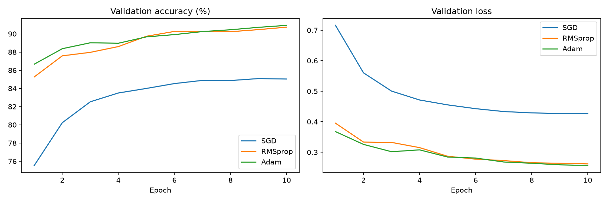
Hình: Validation của optimizer cùng LR. Nguồn: outputs/published/fixed.
| optimizer | best_val_acc | best_epoch | epochs_completed | seconds |
|---|---|---|---|---|
| SGD | 85.083333 | 9 | 10 | 10.368774 |
| RMSprop | 90.733333 | 10 | 10 | 12.454700 |
| Adam | 90.933333 | 10 | 10 | 14.972536 |
SGD có momentum 0,9 với LR 0,001 đạt best validation thấp hơn adaptive optimizer trong ngân sách 10 epoch. Kết luận hợp lệ là cấu hình SGD này chưa đạt mức tương đương trong điều kiện đo. Không suy ra SGD luôn kém Adam/RMSprop, vì LR phù hợp và thời gian hội tụ khác nhau.
Loss curve hỗ trợ đọc mức cải thiện liên tục, accuracy curve mô tả quyết định nhãn. Dao động nhỏ không chứng minh optimizer hỏng; batch order, LR và bề mặt loss có thể tạo dao động. Scheduler điều chỉnh bước cập nhật, không làm mượt các giá trị đã đo.
Candidate fixed LR chỉ dùng train/validation, không xuất test prediction. Vì vậy không đặt best validation accuracy cạnh test accuracy của ba kiến trúc rồi xếp hạng chung. Giữ rõ phạm vi metric là điều kiện để đọc bảng có ý nghĩa.
Cùng LR là điều kiện kiểm soát đơn giản và có giá trị sư phạm. Search riêng ở mục sau bổ sung góc nhìn về độ nhạy tham số. Hai nhánh bổ trợ nhau thay vì một nhánh làm mất giá trị nhánh còn lại.
3.6. Search, pruning và best trial
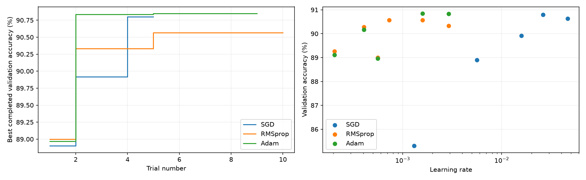
Hình: Tiến trình search và LR–score. Nguồn: outputs/published/tuning.
| optimizer | best_val_acc | trial_number | lr | weight_decay | momentum | trials | completed | pruned |
|---|---|---|---|---|---|---|---|---|
| SGD | 90.800000 | 3 | 0.026070 | 0.000000 | 0.945486 | 10 | 5 | 5 |
| RMSprop | 90.566667 | 4 | 0.001593 | 0.000347 | không tune | 10 | 6 | 4 |
| Adam | 90.850000 | 4 | 0.001593 | 0.000347 | không tune | 10 | 5 | 5 |
Có 10 trial/optimizer, tổng 16 COMPLETE và 14 PRUNED. SGD có 5/5, RMSprop 6/4 và Adam 5/5. Pruned trial không phải phép đo đủ 10 epoch; so tổng thời gian study phải xét khối lượng thực chạy khác nhau do pruning.
| optimizer | best_val_acc_fixed | best_val_acc_tuned | delta_pp |
|---|---|---|---|
| SGD | 85.083333 | 90.800000 | 5.716667 |
| RMSprop | 90.733333 | 90.566667 | -0.166667 |
| Adam | 90.933333 | 90.850000 | -0.083333 |
SGD tăng khoảng 5,7167 điểm phần trăm sau search; RMSprop giảm 0,1667; Adam giảm 0,0833 so với baseline tương ứng. Search hữu hạn không bảo đảm tìm cấu hình tốt hơn. Miền weight decay dương còn loại giá trị 0 của baseline, và không có baseline enqueue để bảo toàn mốc đó trong study.
Adam được refit vì cao nhất trong ba best trial. Tuy vậy, Adam fixed đạt validation 90,9333%, cao hơn Adam tuned 90,85%. Thuật ngữ chính xác là best trong study, không phải best toàn bộ fixed+tuned. Test không dùng để đảo lại lựa chọn sau khi đã xem kết quả.
3.7. Loss/accuracy với best parameters của đủ ba optimizer
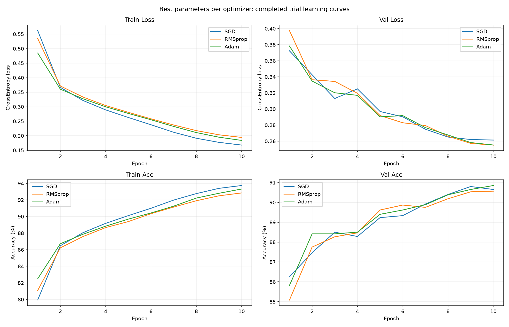
Hình: Train/validation loss và accuracy của best trial từng optimizer. Nguồn: outputs/published/best_optimizer_curves.
Bốn panel là train loss, validation loss, train accuracy và validation accuracy. Mỗi panel có SGD, RMSprop và Adam. Nguồn là history best completed trial của từng optimizer, không phải ba bản sao của một winner; mỗi trial có tham số riêng, được chọn theo cùng objective.
Trong hình, train loss SGD xuống thấp hơn adaptive optimizer ở cuối, nhưng best validation accuracy của Adam cao hơn nhẹ. Điều này cho thấy tối ưu trên train không đồng nghĩa tổng quát hóa tốt hơn. Thứ tự loss và accuracy không bắt buộc trùng vì chúng đo các khía cạnh khác nhau.
Cần phân biệt hình ba optimizer với learning_curves.png của refit Adam. Hình ba đường lấy dữ liệu đã có trong search; chỉ winner được refit riêng trong pipeline hiện hành. Không khẳng định cả ba đã train lại sau search nếu thiếu ba refit run tương ứng.
best_parameters.csv và best_optimizer_history.csv giữ optimizer, trial number và epoch. Đọc một điểm curve có thể truy về history candidate thay vì đoán từ hình. Pruned trial vẫn lưu riêng nhưng không thay thế best completed history trong hình này.
3.8. Refit, save/load và full-test sau tải
Refit dùng Adam LR 0,0015930522616241021, weight_decay 0,0003470266988650413, seed 42, batch 128, 10 epoch. Validation best 90,85% tại epoch 10. Candidate search không được đánh giá test; refit được test sau lựa chọn bằng validation.
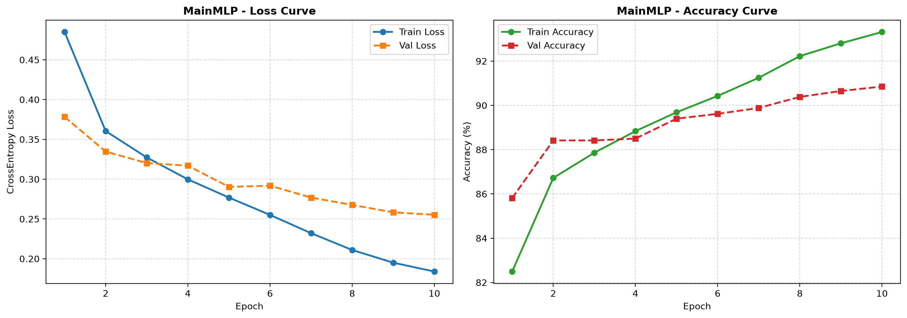
Hình: Đường học của refit Adam. Nguồn: outputs/published/final.
Save/load giữ state_dict và kiến trúc, tạo instance FashionMLP mới, nạp checkpoint, chuyển eval. Roundtrip 16 mẫu ghi max_probability_error=0 và nhãn không đổi. Mười sáu mẫu chỉ là kiểm tra bảo toàn; chất lượng sau load được đánh giá riêng trên đủ 10.000 test.
| Số ảnh test | Accuracy (%) | Macro F1 | CrossEntropy | Roundtrip samples | Max probability delta |
|---|---|---|---|---|---|
| 10000 | 89.140000 | 0.891219 | 0.303679 | 16 | 0.000000 |
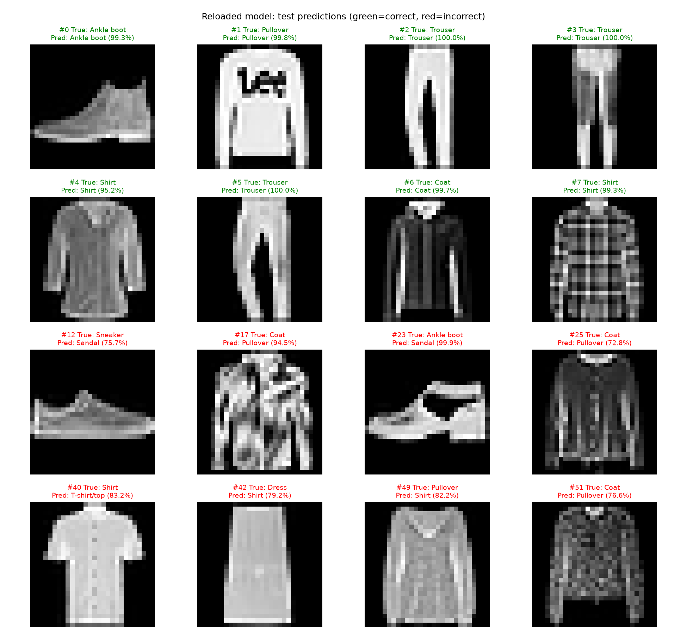
Hình: Mẫu test của model được load lại. Nguồn: outputs/published/loaded_model_test.
Lưới chọn tám mẫu đúng đầu tiên và tám mẫu sai đầu tiên theo index, có true/predicted/probability. Vì chọn cân bằng để minh họa, không lấy tỷ lệ đúng của lưới làm accuracy test. Xanh/đỏ là kết quả mẫu; softmax confidence chưa được calibration trong nghiên cứu này và không đảm bảo dự đoán đúng.
Load thành công không chỉ là không exception. Bằng chứng gồm shape, kiến trúc, eval mode, probabilities, metric full-test và artifact. Những kiểm chứng hỗ trợ suy luận lại trên dữ liệu cùng phân bố, chưa chứng minh chất lượng trên ảnh trang phục ngoài FashionMNIST.
3.9. Kết luận, giới hạn và hướng phát triển
Trong điều kiện đo, tăng dung lượng SmallMLP sang MainMLP cải thiện accuracy và Macro F1. Nối mười feature tạo mức tăng nhỏ hơn nhưng cùng chiều về accuracy, F1 và loss. Cần nhiều seed để đánh giá ổn định; không biến chênh lệch của một lượt thành bảo đảm feature engineering luôn giúp deep learning.
Optimizer cho thấy cấu hình/ngân sách có vai trò lớn. SGD cùng LR chưa đạt mức adaptive, nhưng LR/momentum riêng tăng kết quả mạnh. RMSprop/Adam tuned chưa vượt baseline là kết quả hợp lệ, không phải lý do thay số hoặc bỏ baseline tốt hơn.
Giới hạn gồm một seed, 10 epoch, 10 trial ở pha startup, không enqueue baseline và không chứa weight_decay=0 trong search. Chưa có ablation từng feature, kiểm định cặp, calibration, near-duplicate audit hoặc benchmark thời gian nhiều lượt độc lập. Phép đo bổ sung ở mục 3.10–3.11 có lặp bước trong một process/model, chưa thay thế nhiều lượt độc lập. Test đã được dùng cho nhiều so sánh mô tả; phiên bản sau không nên điều chỉnh cấu hình theo các kết quả đó rồi gọi cùng test là đánh giá hoàn toàn mới.
Ưu tiên mở rộng là nhiều seed, protocol được chốt trước, search bao gồm baseline, ngân sách vượt startup, ablation nhóm cường độ/hình học/biên và CNN nhỏ. Kaggle cần một lượt end-to-end với snapshot/artifact trước khi được coi là đã kiểm chứng môi trường. Augmentation cần extractor đồng bộ với ảnh biến đổi.
SmallMLP phù hợp minh họa mạng gọn; MainMLP là mốc năng lực cao hơn; MainMLP_FE khảo sát biểu diễn lai có thể giải thích. Checkpoint refit đã full-test sau load nhưng chưa là production model hoặc đã kiểm chứng ngoài phân bố. Lab thể hiện được chu trình dữ liệu → đặc trưng → học → đo → lưu/tải với nguồn bằng chứng cụ thể.
Tài liệu tham khảo
- FashionMNIST — repository gốc: nguồn dataset/nhãn; benchmark báo cáo lấy từ run nội bộ, không từ leaderboard.
- PyTorch — Learn the Basics: khung tham khảo các thành phần PyTorch; code được giải thích theo source lab hiện hành.
- Optuna — TPESampler: startup sampling và TPE; diễn giải giới hạn 10/10 dựa trên config thực nghiệm.
- scikit-learn — average_precision_score: định nghĩa AP và phân biệt tích phân hình thang PR.
Quy trình đọc lại và tái lập
- Đọc config/workflow.json và giữ preparation run, model run, comparison run tương ứng; không thay riêng checkpoint mà bỏ scaler/indices.
- Mở notebooks/01_eda_preprocessing_features.ipynb ở MODE=view để kiểm tra bảng EDA, cấu hình split/scaler và đối chiếu extractor trên ảnh thật. Khi chuẩn bị mới, chọn MODE=train và đăng ký preparation run mới sau khi hoàn tất.
- Mở notebooks/02_modeling_comparison.ipynb ở MODE=view để đọc metric/curve đã lưu. MODE=train thực hiện các giai đoạn theo cell và tạo run mới; không ghi đè bằng chứng cũ.
- Sau search, phân biệt history best trial từng optimizer với history refit winner. Giữ study và best_configs để truy vết lựa chọn chỉ theo validation.
- Ở cell cuối, lưu model và nạp vào instance mới; đọc roundtrip.json, test_metrics.json và probabilities của full test. Nếu chuyển máy phải cập nhật đường dẫn prepared.npz trong cấu hình/đối số load.
- So sánh các metric cùng phạm vi: validation với validation, test với test. Ghi rõ thư viện/device của run tái lập trước khi kết luận sai khác là do thay đổi phương pháp.
Danh mục bằng chứng thực nghiệm
-
preparation: thư mục artifact —
outputs/published/preparation. -
comparison: thư mục artifact —
outputs/published/comparison. -
fixed: thư mục artifact —
outputs/published/fixed. -
tuning: thư mục artifact —
outputs/published/tuning. -
final: thư mục artifact —
outputs/published/final. -
optimizer_results: thư mục artifact —
outputs/published/optimizer_results. -
SmallMLP: metric JSON; history CSV.
-
MainMLP: metric JSON; history CSV.
-
MainMLP_FE: metric JSON; history CSV.
-
Best optimizer curves: history của đủ ba optimizer.
-
Full-test sau load: metric; index/nhãn/xác suất mẫu.
3.10. Kiến trúc hiển thị và tài nguyên mỗi mẫu training
Kiến trúc từng model được in trực tiếp trong notebook trước khi đọc/chạy model và lưu TXT cùng bảng layer, không chỉ mô tả bằng tên mạng. Lý do chọn dung lượng nhỏ/lớn và đầu vào pixel/feature được bổ sung vào description. Các learning curves vẫn đọc history của thí nghiệm gốc; không thay đổi accuracy, loss hoặc thời gian train lịch sử.
Phép đo bổ sung ngày 02/11/2026 dùng checkpoint của ba model, batch train cố định 128 mẫu, CPU, 2 thread, 3 warmup và 10 batch timed. Chỉ vài bước training trên checkpoint bản sao trong process riêng, không huấn luyện lại toàn bộ và không đánh giá thêm test. Đo forward, CrossEntropyLoss, backward, optimizer.step với batch đã ở thiết bị; thời gian chia batch size là mức chuẩn hóa theo batch, không phải single-image latency. Không gồm loading/transfer, FE, validation và ghi artifact.
Kết quả nằm trong CSV hiệu năng training, kèm times thô SmallMLP, MainMLP và MainMLP_FE. Mỗi phép đo lưu cấu hình và môi trường riêng, không gán số liệu này ngược vào run cũ.
RAM/sample là sampled peak RSS cả process chia batch size; có cả giá trị baseline và phần tăng so baseline. Nó chứa interpreter, thư viện, model và vùng nhớ dùng chung, có thể bỏ lỡ đỉnh ngắn hơn chu kỳ lấy mẫu; không phải số byte độc lập của từng ảnh. VRAM/sample dùng peak tensor allocated của PyTorch, không phải reserved cache/tổng bộ nhớ card; phép đo CPU hiện tại không có số VRAM. Lượt đo bộ nhớ riêng gồm bước training đầu tiên để tính cấp phát optimizer state; timing đo sau warmup không bật sampler. Không so sánh RSS giữa các process như bằng chứng chính xác về riêng dung lượng kiến trúc hoặc kết luận thứ hạng tốc độ phổ quát từ một lượt đo ngắn.
3.11. Đo training với đúng một mẫu
Đo lại độc lập với batch size 1 thay vì suy từ batch 128. CSV batch 1 và biểu đồ tài nguyên được nhúng trực tiếp trong notebook ngay sau MainMLP_FE, trước phần ROC/PR. Cùng CPU, 2 thread, 3 warmup và 10 timed steps, cùng mẫu train đã chuẩn bị; mỗi model ở process riêng trên checkpoint bản sao. Không chạy lại full training, không thay benchmark batch 128.

RAM process gồm Python/runtime khi batch size bằng 1; bảng và biểu đồ phân biệt peak RSS với phần tăng so baseline. RSS là sampled, không phải peak chính xác; CPU không có số VRAM. RESOURCE_MODE điều khiển benchmark riêng với MODE training của các cell model. Bảng HTML và hình PNG được nhúng trực tiếp, kể cả khi kernel dùng backend Agg.
Trong phép đo batch size 1, thời gian lần lượt khoảng 0,4810 / 0,9142 / 1,0679 ms cho SmallMLP / MainMLP / MainMLP_FE. Phần tăng RSS lần lượt khoảng 4,7383 / 7,0078 / 7,0000 MiB. MainMLP_FE và MainMLP chỉ lệch khoảng 8 KiB ở sampled RSS tăng thêm; không dùng mức lệch này để kết luận FE tiết kiệm RAM. Chênh lệch thời gian quan sát được cũng chưa được quy hoàn toàn cho 10 feature khi chưa lặp nhiều lượt độc lập.